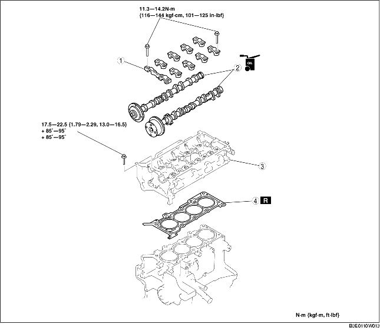

CYLINDER HEAD GASKET REPLACEMENT [ZJ, Z6]
B3E011010271W01
-
Warning
-
• Fuel vapor is hazardous. It can very easily ignite, causing serious injury and damage. Always keep sparks and flames away from fuel.
-
• Fuel line spills and leakage are dangerous. Fuel can ignite and cause serious injuries or death and damage. Fuel can also irritate skin and eyes. To prevent this, always complete the "Fuel Line Safety Procedure". (See BEFORE SERVICE PRECAUTION [ZJ, Z6, LF].)
1. Remove the following parts:
-
(1) Timing chain (See TIMING CHAIN REMOVAL/INSTALLATION [ZJ, Z6].)
-
(2) EGR pipe and EGR valve bracket (See INTAKE-AIR SYSTEM REMOVAL/INSTALLATION [ZJ, Z6].) (See EXHAUST SYSTEM REMOVAL/INSTALLATION [ZJ, Z6].) (See EGR VALVE REMOVAL/INSTALLATION [ZJ, Z6].)
-
(3) Front HO2S (See EXHAUST SYSTEM REMOVAL/INSTALLATION [ZJ, Z6].)
-
(4) Accelerator cable and bracket
-
(5) Fuel hose and fuel injector wiring harness (See QUICK RELEASE CONNECTOR REMOVAL/INSTALLATION [ZJ, Z6, LF].) (See FUEL INJECTOR REMOVAL/INSTALLATION [ZJ, Z6].)
-
(6) Air hose, throttle body and intake manifold (See INTAKE-AIR SYSTEM REMOVAL/INSTALLATION [ZJ, Z6].)
2. Disconnect the following parts:
-
(1) Rear HO2S connector
-
(2) Main silencer (See EXHAUST SYSTEM REMOVAL/INSTALLATION [ZJ, Z6].)
-
(3) WU-TWC (See EXHAUST SYSTEM REMOVAL/INSTALLATION [ZJ, Z6].)
-
(4) Upper radiator hose
-
(5) Heater hose
3. Remove in the order indicated in the table.
4. Install in the reverse order of removal.
5. Inspect the compression. (See COMPRESSION INSPECTION [ZJ, Z6].)

|
1
|
Camshaft cap
|
|
2
|
Camshaft
|
|
3
|
Cylinder head
|
|
4
|
Cylinder head gasket
|
Camshaft Cap Removal Note
1. Loosen the camshaft cap installation bolts in 2-3 passes in the order shown in the figure.
2. Remove the camshaft caps.
Cylinder Head Removal Note
1. Loosen the cylinder head installation bolts in 2-3 passes in the order shown in the figure, and remove them.
Cylinder Head Installation Note
1. Measure the length of each cylinder head installation bolt.
-
• If it exceeds the maximum specification, replace the cylinder head installation bolt.
-
Standard
-
L: 128.9-129.5 mm {5.075-5.098 in}
-
Maximum
-
L:130.2 mm {5.125 in}
2. Tighten the cylinder head installation bolts in three steps in the order shown in the figure.
-
1. Tightening torque: 17.5-22.5 N·m {1.79-2.29 kgf·m, 13.0-16.5 ft·lbf}
-
2. Tightening angle: 85°-95°
-
3. Tightening angle: 85°-95°
Camshaft Cap Installation Note
1. Align the No.1 cylinder camshaft position to the TDC position, and install the camshaft.
2. Install the camshaft caps in the positions numbered as shown in the figure, and then temporarily tighten the No.2 and No.7 camshaft cap installation bolts.
3. Tighten the camshaft cap installation bolts in 2-3 passes uniformly in the order shown in the figure.
-
Tightening torque
-
11.3-14.2 N·m {116-144 kgf·cm, 101-125 in·lbf}